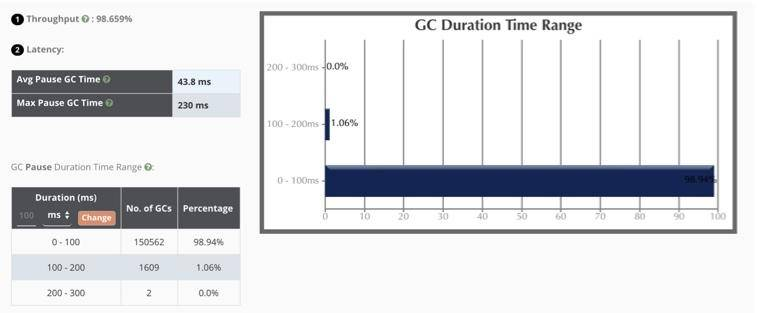
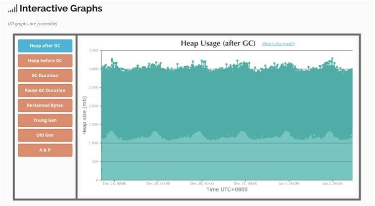
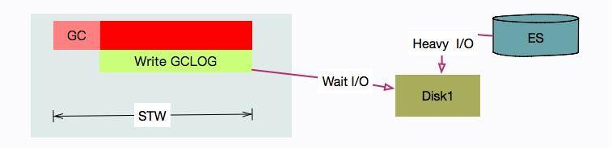

- 00 开篇词：JVM，一块难啃的骨头.md.html
- 01 一探究竟：为什么需要 JVM？它处在什么位置？.md.html
- 02 大厂面试题：你不得不掌握的 JVM 内存管理.md.html
- 03 大厂面试题：从覆盖 JDK 的类开始掌握类的加载机制.md.html
- 04 动手实践：从栈帧看字节码是如何在 JVM 中进行流转的.md.html
- 05 大厂面试题：得心应手应对 OOM 的疑难杂症.md.html
- 06 深入剖析：垃圾回收你真的了解吗？（上）.md.html
- 07 深入剖析：垃圾回收你真的了解吗？（下）.md.html
- 08 大厂面试题：有了 G1 还需要其他垃圾回收器吗？.md.html
- 09 案例实战：亿级流量高并发下如何进行估算和调优.md.html
- 10 第09讲：案例实战：面对突如其来的 GC 问题如何下手解决.md.html
- 11 第10讲：动手实践：自己模拟 JVM 内存溢出场景.md.html
- 12 第11讲：动手实践：遇到问题不要慌，轻松搞定内存泄漏.md.html
- 13 工具进阶：如何利用 MAT 找到问题发生的根本原因.md.html
- 14 动手实践：让面试官刮目相看的堆外内存排查.md.html
- 15 预警与解决：深入浅出 GC 监控与调优.md.html
- 16 案例分析：一个高死亡率的报表系统的优化之路.md.html
- 17 案例分析：分库分表后，我的应用崩溃了.md.html
- 18 动手实践：从字节码看方法调用的底层实现.md.html
- 19 大厂面试题：不要搞混 JMM 与 JVM.md.html
- 20 动手实践：从字节码看并发编程的底层实现.md.html
- 21 动手实践：不为人熟知的字节码指令.md.html
- 22 深入剖析：如何使用 Java Agent 技术对字节码进行修改.md.html
- 23 动手实践：JIT 参数配置如何影响程序运行？.md.html
- 24 案例分析：大型项目如何进行性能瓶颈调优？.md.html
- 25 未来：JVM 的历史与展望.md.html
- 26 福利：常见 JVM 面试题补充.md.html
- 捐赠
10 第09讲：案例实战：面对突如其来的 GC 问题如何下手解决
本课时我们主要从一个实战案例入手分析面对突如其来的 GC 问题该如何下手解决。
想要下手解决 GC 问题，我们首先需要掌握下面这三种问题。
- 如何使用 jstat 命令查看 JVM 的 GC 情况？
- 面对海量 GC 日志参数，如何快速抓住问题根源？
- 你不得不掌握的日志分析工具。
工欲善其事，必先利其器。我们前面课时讲到的优化手段，包括代码优化、扩容、参数优化，甚至我们的估算，都需要一些支撑信息加以判断。

对于 JVM 来说，一种情况是 GC 时间过长，会影响用户的体验，这个时候就需要调整某些 JVM 参数、观察日志。
另外一种情况就比较严重了，发生了 OOM，或者操作系统的内存溢出。服务直接宕机，我们要寻找背后的原因。
这时，GC 日志能够帮我们找到问题的根源。本课时，我们就简要介绍一下如何输出这些日志，以及如何使用这些日志的支撑工具解决问题。
GC 日志输出
你可能感受到，最近几年 Java 的版本更新速度是很快的，JVM 的参数配置其实变化也很大。就拿 GC 日志这一块来说，Java 9 几乎是推翻重来。网络上的一些文章，把这些参数写的乱七八糟，根本不能投入生产。如果你碰到不能被识别的参数，先确认一下自己的 Java 版本。
在事故出现的时候，通常并不是那么温柔。你可能在半夜里就能接到报警电话，这是因为很多定时任务都设定在夜深人静的时候执行。
这个时候，再去看 jstat 已经来不及了，我们需要保留现场。这个便是看门狗的工作，看门狗可以通过设置一些 JVM 参数进行配置。
那在实践中，要怎么用呢？请看下面命令行。
Java 8
我们先看一下 JDK8 中的使用。
#!/bin/sh
LOG_DIR="/tmp/logs"
JAVA_OPT_LOG=" -verbose:gc"
JAVA_OPT_LOG="${JAVA_OPT_LOG} -XX:+PrintGCDetails"
JAVA_OPT_LOG="${JAVA_OPT_LOG} -XX:+PrintGCDateStamps"
JAVA_OPT_LOG="${JAVA_OPT_LOG} -XX:+PrintGCApplicationStoppedTime"
JAVA_OPT_LOG="${JAVA_OPT_LOG} -XX:+PrintTenuringDistribution"
JAVA_OPT_LOG="${JAVA_OPT_LOG} -Xloggc:${LOG_DIR}/gc_%p.log"
JAVA_OPT_OOM=" -XX:+HeapDumpOnOutOfMemoryError -XX:HeapDumpPath=${LOG_DIR} -XX:ErrorFile=${LOG_DIR}/hs_error_pid%p.log "
JAVA_OPT="${JAVA_OPT_LOG} ${JAVA_OPT_OOM}"
JAVA_OPT="${JAVA_OPT} -XX:-OmitStackTraceInFastThrow"
合成一行。
-verbose:gc -XX:+PrintGCDetails -XX:+PrintGCDateStamps
-XX:+PrintGCApplicationStoppedTime -XX:+PrintTenuringDistribution
-Xloggc:/tmp/logs/gc_%p.log -XX:+HeapDumpOnOutOfMemoryError
-XX:HeapDumpPath=/tmp/logs -XX:ErrorFile=/tmp/logs/hs_error_pid%p.log
-XX:-OmitStackTraceInFastThrow
然后我们来解释一下这些参数：
| 参数 | 意义 |
|---|---|
| -verbose:gc | 打印 GC 日志 |
| PrintGCDetails | 打印详细 GC 日志 |
| PrintGCDateStamps | 系统时间，更加可读，PrintGCTimeStamps 是 JVM 启动时间 |
| PrintGCApplicationStoppedTime | 打印 STW 时间 |
| PrintTenuringDistribution | 打印对象年龄分布，对调优 MaxTenuringThreshold 参数帮助很大 |
| loggc | 将以上 GC 内容输出到文件中 |
再来看下 OOM 时的参数：
| 参数 | 意义 |
|---|---|
| HeapDumpOnOutOfMemoryError | OOM 时 Dump 信息，非常有用 |
| HeapDumpPath | Dump 文件保存路径 |
| ErrorFile | 错误日志存放路径 |
注意到我们还设置了一个参数 OmitStackTraceInFastThrow，这是 JVM 用来缩简日志输出的。
开启这个参数之后，如果你多次发生了空指针异常，将会打印以下信息。
java.lang.NullPointerException
java.lang.NullPointerException
java.lang.NullPointerException
java.lang.NullPointerException
在实际生产中，这个参数是默认开启的，这样就导致有时候排查问题非常不方便（很多研发对此无能为力），我们这里把它关闭，但这样它会输出所有的异常堆栈，日志会多很多。
Java 13
再看下 JDK 13 中的使用。
从 Java 9 开始，移除了 40 多个 GC 日志相关的参数。具体参见 JEP 158。所以这部分的日志配置有很大的变化。
我们同样看一下它的生成脚本。
#!/bin/sh
LOG_DIR="/tmp/logs"
JAVA_OPT_LOG=" -verbose:gc"
JAVA_OPT_LOG="${JAVA_OPT_LOG} -Xlog:gc,gc+ref=debug,gc+heap=debug,gc+age=trace:file=${LOG_DIR}/gc_%p.log:tags,uptime,time,level"
JAVA_OPT_LOG="${JAVA_OPT_LOG} -Xlog:safepoint:file=${LOG_DIR}/safepoint_%p.log:tags,uptime,time,level"
JAVA_OPT_OOM=" -XX:+HeapDumpOnOutOfMemoryError -XX:HeapDumpPath=${LOG_DIR} -XX:ErrorFile=${LOG_DIR}/hs_error_pid%p.log "
JAVA_OPT="${JAVA_OPT_LOG} ${JAVA_OPT_OOM}"
JAVA_OPT="${JAVA_OPT} -XX:-OmitStackTraceInFastThrow"
echo $JAVA_OPT
合成一行展示。
-verbose:gc -Xlog:gc,gc+ref=debug,gc+heap=debug,gc+age=trace:file
=/tmp/logs/gc_%p.log:tags,uptime,time,level -Xlog:safepoint:file=/tmp
/logs/safepoint_%p.log:tags,uptime,time,level -XX:+HeapDumpOnOutOfMemoryError
-XX:HeapDumpPath=/tmp/logs -XX:ErrorFile=/tmp/logs/hs_error_pid%p.log
-XX:-OmitStackTraceInFastThrow
可以看到 GC 日志的打印方式，已经完全不一样，但是比以前的日志参数规整了许多。
我们除了输出 GC 日志，还输出了 safepoint 的日志。这个日志对我们分析问题也很重要，那什么叫 safepoint 呢？
safepoint 是 JVM 中非常重要的一个概念，指的是可以安全地暂停线程的点。
当发生 GC 时，用户线程必须全部停下来，才可以进行垃圾回收，这个状态我们可以认为 JVM 是安全的（safe），整个堆的状态是稳定的。

如果在 GC 前，有线程迟迟进入不了 safepoint，那么整个 JVM 都在等待这个阻塞的线程，会造成了整体 GC 的时间变长。
所以呢，并不是只有 GC 会挂起 JVM，进入 safepoint 的过程也会。这个概念，如果你有兴趣可以自行深挖一下，一般是不会出问题的。
如果面试官问起你在项目中都使用了哪些打印 GC 日志的参数，上面这些信息肯定是不很好记忆。你需要进行以下总结。比如：
“我一般在项目中输出详细的 GC 日志，并加上可读性强的 GC 日志的时间戳。特别情况下我还会追加一些反映对象晋升情况和堆详细信息的日志，用来排查问题。另外，OOM 时自动 Dump 堆栈，我一般也会进行配置”。
GC 日志的意义
我们首先看一段日志，然后简要看一下各个阶段的意义。

- 1 表示 GC 发生的时间，一般使用可读的方式打印；
- 2 表示日志表明是 G1 的“转移暂停: 混合模式”，停顿了约 223ms；
- 3 表明由 8 个 Worker 线程并行执行，消耗了 214ms；
- 4 表示 Diff 越小越好，说明每个工作线程的速度都很均匀；
- 5 表示外部根区扫描，外部根是堆外区。JNI 引用，JVM 系统目录，Classloaders 等；
- 6 表示更新 RSet 的时间信息；
- 7 表示该任务主要是对 CSet 中存活对象进行转移（复制）；
- 8 表示花在 GC 之外的工作线程的时间；
- 9 表示并行阶段的 GC 总时间；
- 10 表示其他清理活动；
- 11表示收集结果统计；
- 12 表示时间花费统计。
可以看到 GC 日志描述了垃圾回收器过程中的几乎每一个阶段。但即使你了解了这些数值的意义，在分析问题时，也会感到吃力，我们一般使用图形化的分析工具进行分析。
尤其注意的是最后一行日志，需要详细描述。可以看到 G C花费的时间，竟然有 3 个数值。这个数值你可能在多个地方见过。如果你手头有 Linux 机器，可以执行以下命令：
time ls /

可以看到一段命令的执行，同样有三种纬度的时间统计。接下来解释一下这三个字段的意思。
- real 实际花费的时间，指的是从开始到结束所花费的时间。比如进程在等待 I/O 完成，这个阻塞时间也会被计算在内；
- user 指的是进程在用户态（User Mode）所花费的时间，只统计本进程所使用的时间，注意是指多核；
- sys 指的是进程在核心态（Kernel Mode）花费的 CPU 时间量，指的是内核中的系统调用所花费的时间，只统计本进程所使用的时间。
在上面的 GC 日志中，real < user + sys，因为我们使用了多核进行垃圾收集，所以实际发生的时间比 (user + sys) 少很多。在多核机器上，这很常见。
[Times: user=1.64 sys=0.00, real=0.23 secs]
下面是一个串行垃圾收集器收集的 GC 时间的示例。由于串行垃圾收集器始终仅使用一个线程，因此实际使用的时间等于用户和系统时间的总和：
[Times: user=0.29 sys=0.00, real=0.29 secs]
那我们统计 GC 以哪个时间为准呢？一般来说，用户只关心系统停顿了多少秒，对实际的影响时间非常感兴趣。至于背后是怎么实现的，是多核还是单核，是用户态还是内核态，它们都不关心。所以我们直接使用 real 字段。
GC日志可视化
肉眼可见的这些日志信息，让人非常头晕，尤其是日志文件特别大的时候。所幸现在有一些在线分析平台，可以帮助我们分析这个过程。下面我们拿常用的 gceasy 来看一下。
以下是一个使用了 G1 垃圾回收器，堆内存为 6GB 的服务，运行 5 天的 GC 日志。
（1）堆信息

我们可以从图中看到堆的使用情况。
（2）关键信息
从图中我们可以看到一些性能的关键信息。
吞吐量：98.6%（一般超过 95% 就 ok 了）；
最大延迟：230ms，平均延迟：42.8ms；
延迟要看服务的接受程度，比如 SLA 定义 50ms 返回数据，上面的最大延迟就会有一点问题。本服务接近 99% 的停顿在 100ms 以下，可以说算是非常优秀了。

你在看这些信息的时候，一定要结合宿主服务器的监控去看。比如 GC 发生期间，CPU 会突然出现尖锋，就证明 GC 对 CPU 资源使用的有点多。但多数情况下，如果吞吐量和延迟在可接受的范围内，这些对 CPU 的超额使用是可以忍受的。
（3）交互式图表

可以对有问题的区域进行放大查看，图中表示垃圾回收后的空间释放，可以看到效果是比较好的。
（4）G1 的时间耗时

如图展示了 GC 的每个阶段花费的时间。可以看到平均耗时最长的阶段，就是 Concurrent Mark 阶段，但由于是并发的，影响并不大。随着时间的推移，YoungGC 竟然达到了 136485 次。运行 5 天，光花在 GC 上的时间就有 2 个多小时，还是比较可观的。
（5）其他

如图所示，整个 JVM 创建了 100 多 T 的数据，其中有 2.4TB 被 promoted 到老年代。
另外，还有一些 safepoint 的信息等，你可以自行探索。
那到底什么样的数据才是有问题的呢？gceasy 提供了几个案例。比如下面这个就是停顿时间明显超长的 GC 问题。

下面这个是典型的内存泄漏。

上面这些问题都是非常明显的。但大多数情况下，问题是偶发的。从基本的衡量指标，就能考量到整体的服务水准。如果这些都没有问题，就要看曲线的尖峰。
一般来说，任何不平滑的曲线，都是值得怀疑的，那就需要看一下当时的业务情况具体是什么样子的。是用户请求突增引起的，还是执行了一个批量的定时任务，再或者查询了大批量的数据，这要和一些服务的监控一起看才能定位出根本问题。
只靠 GC 来定位问题是比较困难的，我们只需要知道它有问题就可以了。后面，会介绍更多的支持工具进行问题的排解。
为了方便你调试使用，我在 GitHub 上上传了两个 GC 日志。其中 gc01.tar.gz 就是我们现在正在看的，解压后有 200 多兆；另外一个 gc02.tar.gz 是一个堆空间为 1GB 的日志文件，你也可以下载下来体验一下。
GitHub 地址：
另外，GCViewer 这个工具也是常用的，可以下载到本地，以 jar 包的方式运行。
在一些极端情况下，也可以使用脚本简单过滤一下。比如下面行命令，就是筛选停顿超过 100ms 的 GC 日志和它的行数（G1）。
# grep -n real gc.log | awk -F"=| " '{ if($8>0.1){ print }}'
1975: [Times: user=2.03 sys=0.93, real=0.75 secs]
2915: [Times: user=1.82 sys=0.65, real=0.64 secs]
16492: [Times: user=0.47 sys=0.89, real=0.35 secs]
16627: [Times: user=0.71 sys=0.76, real=0.39 secs]
16801: [Times: user=1.41 sys=0.48, real=0.49 secs]
17045: [Times: user=0.35 sys=1.25, real=0.41 secs]
jstat
上面的可视化工具，必须经历导出、上传、分析三个阶段，这种速度太慢了。有没有可以实时看堆内存的工具？
你可能会第一时间想到 jstat 命令。第一次接触这个命令，我也是很迷惑的，主要是输出的字段太多，不了解什么意义。
但其实了解我们在前几节课时所讲到内存区域划分和堆划分之后，再看这些名词就非常简单了。

我们拿 -gcutil 参数来说明一下。
jstat -gcutil $pid 1000
只需要提供一个 Java 进程的 ID，然后指定间隔时间（毫秒）就 OK 了。
S0 S1 E O M CCS YGC YGCT FGC FGCT GCT
0.00 0.00 72.03 0.35 54.12 55.72 11122 16.019 0 0.000 16.019
0.00 0.00 95.39 0.35 54.12 55.72 11123 16.024 0 0.000 16.024
0.00 0.00 25.32 0.35 54.12 55.72 11125 16.025 0 0.000 16.025
0.00 0.00 37.00 0.35 54.12 55.72 11126 16.028 0 0.000 16.028
0.00 0.00 60.35 0.35 54.12 55.72 11127 16.028 0 0.000 16.028
可以看到，E 其实是 Eden 的缩写，S0 对应的是 Surivor0，S1 对应的是 Surivor1，O 代表的是 Old，而 M 代表的是 Metaspace。
YGC 代表的是年轻代的回收次数，YGC T对应的是年轻代的回收耗时。那么 FGC 肯定代表的是 Full GC 的次数。
你在看日志的时候，一定要注意其中的规律。-gcutil 位置的参数可以有很多种。我们最常用的有 gc、gcutil、gccause、gcnew 等，其他的了解一下即可。
- gc: 显示和 GC 相关的 堆信息；
- gcutil: 显示 垃圾回收信息；
- gccause: 显示垃圾回收 的相关信息（同 -gcutil），同时显示 最后一次 或 当前 正在发生的垃圾回收的 诱因；
- gcnew: 显示 新生代 信息；
- gccapacity: 显示 各个代 的 容量 以及 使用情况；
- gcmetacapacity: 显示 元空间 metaspace 的大小；
- gcnewcapacity: 显示 新生代大小 和 使用情况；
- gcold: 显示 老年代 和 永久代 的信息；
- gcoldcapacity: 显示 老年代 的大小；
- printcompilation: 输出 JIT 编译 的方法信息；
- class: 显示 类加载 ClassLoader 的相关信息；
- compiler: 显示 JIT 编译 的相关信息；
如果 GC 问题特别明显，通过 jstat 可以快速发现。我们在启动命令行中加上参数 -t，可以输出从程序启动到现在的时间。如果 FGC 和启动时间的比值太大，就证明系统的吞吐量比较小，GC 花费的时间太多了。另外，如果老年代在 Full GC 之后，没有明显的下降，那可能内存已经达到了瓶颈，或者有内存泄漏问题。
下面这行命令，就追加了 GC 时间的增量和 GC 时间比率两列。
jstat -gcutil -t 90542 1000 | awk 'BEGIN{pre=0}{if(NR>1) {print $0 "\t" ($12-pre) "\t" $12*100/$1 ; pre=$12 } else { print $0 "\tGCT_INC\tRate"} }'
Timestamp S0 S1 E O M CCS YGC YGCT FGC FGCT GCT GCT_INC Rate
18.7 0.00 100.00 6.02 1.45 84.81 76.09 1 0.002 0 0.000 0.002 0.002 0.0106952
19.7 0.00 100.00 6.02 1.45 84.81 76.09 1 0.002 0 0.000 0.002 0 0.0101523
GC 日志也会搞鬼
顺便给你介绍一个实际发生的故障。
你知道 ElasticSearch 的速度是非常快的，我们为了压榨它的性能，对磁盘的读写几乎是全速的。它在后台做了很多 Merge 动作，将小块的索引合并成大块的索引。还有 TransLog 等预写动作，都是 I/O 大户。
使用 iostat -x 1 可以看到具体的 I/O 使用状况。
问题是，我们有一套 ES 集群，在访问高峰时，有多个 ES 节点发生了严重的 STW 问题。有的节点竟停顿了足足有 7~8 秒。
[Times: user=0.42 sys=0.03, real=7.62 secs]
从日志可以看到在 GC 时用户态只停顿了 420ms，但真实的停顿时间却有 7.62 秒。
盘点一下资源，唯一超额利用的可能就是 I/O 资源了（%util 保持在 90 以上），GC 可能在等待 I/O。
通过搜索，发现已经有人出现过这个问题，这里直接说原因和结果。
原因就在于，写 GC 日志的 write 动作，是统计在 STW 的时间里的。在我们的场景中，由于 ES 的索引数据，和 GC 日志放在了一个磁盘，GC 时写日志的动作，就和写数据文件的动作产生了资源争用。

解决方式也是比较容易的，把 ES 的日志文件，单独放在一块普通 HDD 磁盘上就可以了。
小结
本课时，我们主要介绍了比较重要的 GC 日志，以及怎么输出它，并简要的介绍了一段 G1 日志的意义。对于这些日志的信息，能够帮助我们理解整个 GC 的过程，专门去记忆它投入和产出并不成正比，可以多看下 G1 垃圾回收器原理方面的东西。
接下来我们介绍了几个图形化分析 GC 的工具，这也是现在主流的使用方式，因为动辄几百 MB 的 GC 日志，是无法肉眼分辨的。如果机器的 I/O 问题很突出，就要考虑把 GC 日志移动到单独的磁盘。
我们尤其介绍了在线分析工具 gceasy，你也可以下载 gcviewer 的 jar 包本地体验一下。
最后我们看了一个命令行的 GC 回收工具 jstat，它的格式比较规整，可以重定向到一个日志文件里，后续使用 sed、awk 等工具进行分析。关于相关的两个命令，可以参考我以前写的两篇文章。
© 2019 - 2023 Liangliang Lee. Powered by gin and hexo-theme-book.